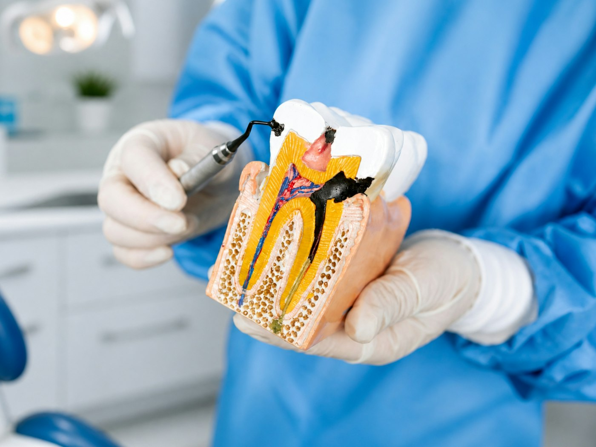

BeispielbildSchmerzen? Rufen Sie an, wir finden kurzfristig einen Termin.
Wer mit Zahnschmerzen anruft, muss nicht wochenlang warten. Meist können Sie noch am selben Tag kommen, oft schon wenig später.
- Schmerz- und Notfallbehandlung
- Wurzelbehandlung, wenn der Nerv entzündet ist
- Füllungen, Inlays und Reparaturen
- Abgebrochene Zähne, gelöste Kronen und Brücken